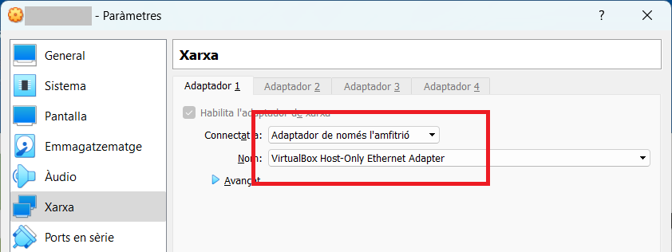

Exàmen 25 de maig de 2023
Aquest examen consisteix en fer els següents passos:
Estat inicial
En començar l'activitat la configuració de l'adapatador de xarxa virtual ha d'estar com es mostra a continuació:
1r pas
Canvia el nom del servidor
<CognomAlumne>SMX2
on <CognomAlumne> és
només el cognom de l'alumne sense el nom.
2n pas
Canvia l'adreça IP del servidor, perquè sigui fixa. Caldrà que sigui la següent:
192.168.<NumeroMesNaixmanentAlumne>.1/24
on
<NumeroMesNaixmanentAlumne> és el mes de la data de
naixement de l'alumne, amb un zero davant si és inferior a 10.
<NumeroMesNaixmanentAlumne> és el mes de la data de
naixement de l'alumne, amb un zero davant si és inferior a 10.
3r pas
Fer la instal·lació del IIS seguint el següent enllaç
tutorial-instalacion-iis-windows.html.
Fent servir els els següents fitxers, que ja estan descarregats localment al servidor.
-
php-7.2.9-nts-Win32-VC15-x86.zip
-
VC_redist.x86.exe
-
test.html
3r pas
Fer la instal·lació i configuració de PHP seguint el següent enllaç:
instalar-php-en-windows-server-iis.html.
Fent servir els els següents fitxers, que ja estan descarregats localment al servidor.
-
info.php